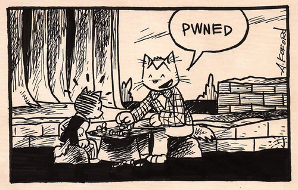

08-07-2012 10:12PM (ET)
Disclaimer: The following post is uses Gmail and Google Accounts as a punching bag, but these problems discussed are both widely known, universal to identity providers on the web and not Google's fault. Gmail has just been chosen to fill the victim only due to it's popularity and general bestness.
Password phishing attacks have been going on for over 25 years and the situation has only gotten worse. This post argues that by using a browser plugin to customize login pages on the client, attacks will have much more difficulty forging believable login pages.
I will argue this point by first showing two phishing attacks which would probably fool a fairly sophisticated computer user. These attacks are almost definitely not novel and are probably used in the wild. Compare these attacks to typical advice on preventing phishing. Consider the following two attacks:
Fake OAuth page: Websites will often allow users to authenticate with their google account using OAuth. If they are not logged into their Google account already it will ask them to login1. The workflow looks like this:
Eve wants to steal Alice's password so she setups up a website as above but in step 3 Alice is sent to a fake, but realistic looking gmail login page. Alice just gave her username and password away. Eve can interactively check if Alice's provided a real username/password by supplying it to Gmail to see if it works. If Alice had Two-Factor authentication setup Eve can merely request a verification code from Alice as part of the login request. In fact if Eve wants to change the password and lock Alice out of her own account she can claim that the first verification code that Alice supplied (as part of her second factor) was incorrect and ask for a second one (loading the page for 60 seconds to wait for the first verification token to expire).

Tabnapping: Gmail has a habit of signing users out of their gmail accounts, which has trained users to sign back in at random points during the day. This can be exploited by crafting a page which when it detects that the user is inactive or idle it transforms into a fake gmail page saying that user has been logged out and that they should login again. This general approach is called tabnapping.
Alice should be able to notice that she is signed into Google in other tabs: As [Google says]:(http://www.google.com/about/company/rewardprogram.html)
"At this time, the ability of malicious web sites to log users out of unrelated web applications is essentially unavoidable; it is a consequence of how the web is designed, and cannot be reliably prevented by any single website." This means that Eve can log Alice out of her Google Account. In fact Eve can keep logging Alice out until Alice logs into Eve's fake Google Account.
Alice can tell the difference between the fake login page and the real login page by inspecting the URL: Unfortunately there are really effective ways of making fake but undetectable urls (see also URL redirecting).
Alice uses HTTPS so she is safe: Phishing sites legally get HTTPS certificates as well. HTTPS offers zero protection in this scenario.
The crux of the problem is that users have no way2 of telling a real Google accounts or Gmail login page from a fake one since the styling of a login page can be easily copied.
Customize/Skin the Login Page: Users will often skin or customize the look of the internal gmail web application by choosing a theme. What google should do is force new users to choose a unique skin for their 'trusted' home computer and persist this skin even when they are not signed into their Gmail account such the skin will be applied to the login screen for their Gmail account. This skin would persist on client 5, so an attacker would not be able to learn it by querying Google. Since the attacker can't learn the skin that user is using, the attacker can't replicate what the user expects to see. Thus the attacker will have more difficulty fooling the user3. An example skin is shown below.
qr-codes: For added security the page could display a qr-code which the user could scan with their mobile phone to log themselves in without typing in a password. Isaac Potoczny-Jones has a neat blog post on using qr-codes as authentication4.
There are several problems with training users to use the look of a website to determine its trustworthiness.
This is a real risk, but users already use the look of a webpage to judge it's trustworthiness. Most phishing attacks are not targeted and suffocated and this would stop these sorts of attacks.
This solution probably wouldn't be that useful for people that use many difficult computers.
Unfortunately, signing into Google Chrome does not automatically sign you into all your Google Accounts. Passwords can be saved in Google Chrome, but there are numerous ways to trick someone into entering their password into a realistic looking login screen.
For an example how legitimate sites do this go to goodreads.com in safe/spy/porn/incognito mode and click on the "sign in using Google" button. ↩
Yes, yes, they can check the certificate of the page and maybe catch a poorly generated cert, but how many times do you check the certificate of the page when you login to Gmail? ↩
All users can be fooled given enough time and effort. ↩
I don't see any reason why Google is not doing this already. They support Two-Factor authentication. While qr-auth is as vulnerable as username/password schemes, a successful attack only steals a one-use token rather than a username and password. This would be perfect for situations in which someone is concerned about a keylogger. In fact if you combine qr-auth with a browser plugin it becomes more secure than username/password schemes since the plugin can verify if the page is gmail or not. ↩
This is really the tricky part as an attacker can wipe browser cookies at will. One surefire way would be to use a browser plugin or use the Google Chrome Sync functionality. ↩